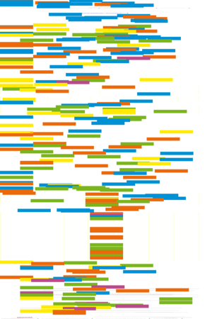
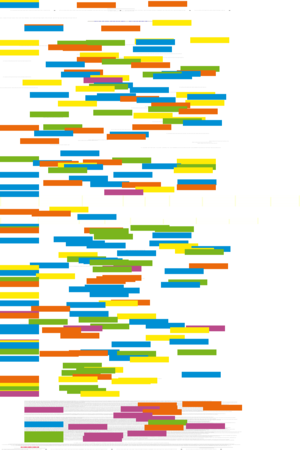
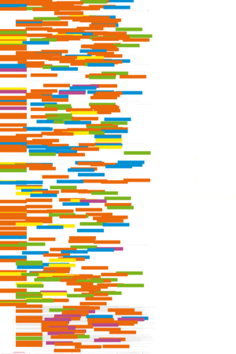
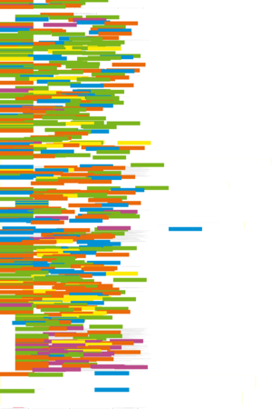
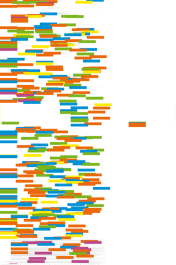
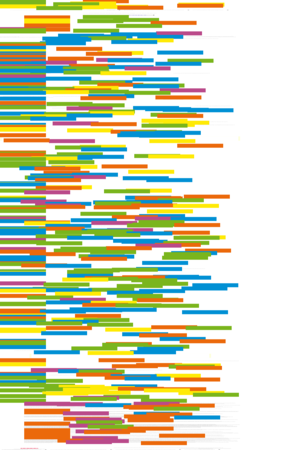
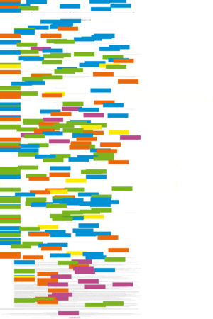
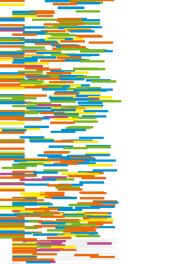

| About IR |
| Editors |
| Author instructions |
| Copyright |
| Author index |
| Subject index |
| Search |
| Reviews |
| Weblog |
| Register |
| Home |
Volume 9 No 2 January, 2004
Selected papers from the Conference, 'Toward a user-centred approach to digital libraries', Espoo, Finland, September 8 - 9, 2003
Linda Banwell and Graham Coulson
Users and user study methodology: the JUBILEE project
Terttu Kortelainen
An analysis of the use of electronic journals and commercial journal article collections through the FinELib portal
Kirsti Nilsen
The Library Visit Study: user experiences at the virtual reference desk
Eero Sormunen and Sami Pennanen
The challenge of automated tutoring in Web-based learning environments for information retrieval instruction
John Colvin and Judith Keene
Supporting undergraduate learning through the collaborative promotion of e-journals by library and academic departments
Bo-Christer Björk
Open access to scientific publications - an analysis of the barriers to change
Other refereed papers
Wallace Koehler
A longitudinal study of Web pages continued: a consideration of document persistence
Rita Marcella and Karl Knox
Systems for the management of information in a university context: an investigation of user need
 Resúmenes en Español
Resúmenes en Español
Watch this: forms move centre stage. — one of a series of occasional columns by Terrence A. Brooks of the Information School, University of Washington, USA.
Reviews
A.P. Bishop, N.A. Van House and B.P. Buttenfield. Digital library use: social practice in design and evaluation. Cambridge, MA: MIT Press, 2003.
Klaus Ceynowa and André Coners. (Eds.) Cost management for university libraries: with attached CD-ROM. Munich: Saur, 2003.
D. Fensel, J.A. Hendler, H. Lieberman, and W. Wahlster, (Eds.) Spinning the Semantic Web: bringing the World Wide Web to its full potential. Cambridge, MA; London: MIT Press, 2003.
Hacking the systems. Reviews of Tara Calishain and Rael Dornfest, Google hacks: 100 industrial-strength tips and tools. Sebastopol, CA: O'Reilly, 2003; Paul Bausch, Amazon hacks: 100 industrial-strength tips and tools.Sebastopol, CA: O'Reilly, 2003; and Preston Grall, Windows XP hacks: 100 industrial-strength tips and tools.Sebastopol, CA: O'Reilly,
Leandro Herrero, The trouble with management. Richmond: PJB Publications Ltd., 2002.
William Hersh, Information retrieval: a health and biomedical perspective (2nd ed.) New York, NY: Springer, 2003
June Lester and Wallace C. Koehler Fundamentals of information studies: understanding information and its environment. New York: Neal-Schuman Publishers, Inc., 2003.
Bruce Edward Massis, editor. Models of cooperation in U.S., Latin American and Caribbean libraries: the first IFLA/SEFLIN International Summit on Library Cooperation in the Americas. Munich: Saur, 2003.
Net Snipppets 3.0.3.2 Sunnyvale, CA: Net Snippets Ltd., 2003.
Morten Flate Paulsen. Online education and learning management systems: global e-learning in a Scandinavian perspective. Oslo: NKI Gorlaget, 2003.
Erik T. Ray, Learning XML. (2nd ed.) Sebastopol, CA: O'Reilly, 2003.
Cristina Soy Auditoría de la información. Editorial UOC, 2002.
Anne Valmas Eestlaste kirjastustegevus välismaal 1944-2000 [Publishing activities of Estonians outside Estonia during 1944-2000]. [Two volumes]. Tallinn: Tallinna Pedagoogikaülikool, 2003.
What's in the open access e-journals?
Conference announcements
A message to Conference organizers.
ISIC (Information Seeking in Context) 2004, Dublin, Ireland, 1-3 September 2004
ECDL 2004, the 8th European Digital Library Conference, 12-17 September, 2004. University of Bath, United Kingdom.
Check the other resources available at InformationR.net - free resources for information researchers. If you find Information Research useful please sign in and we'll notify you of future issues.
Contribute ideas and links to relevant resources on the Weblog. Join at
http://www.free-conversant.com/irweblog/
Information Research: an international electronic journal, is published four times a year by Professor Tom Wilson with technical support from Lund University, Sweden and editorial support from the Swedish School of Librarianship and Information Science, Högskolan in Borås.
| |||
 |
Web Counter |
||